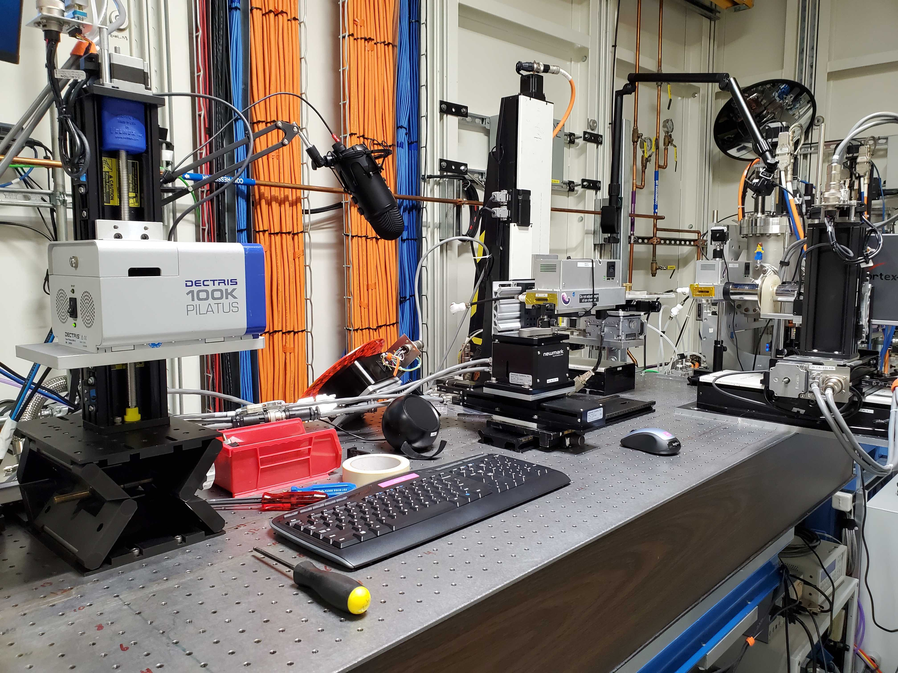
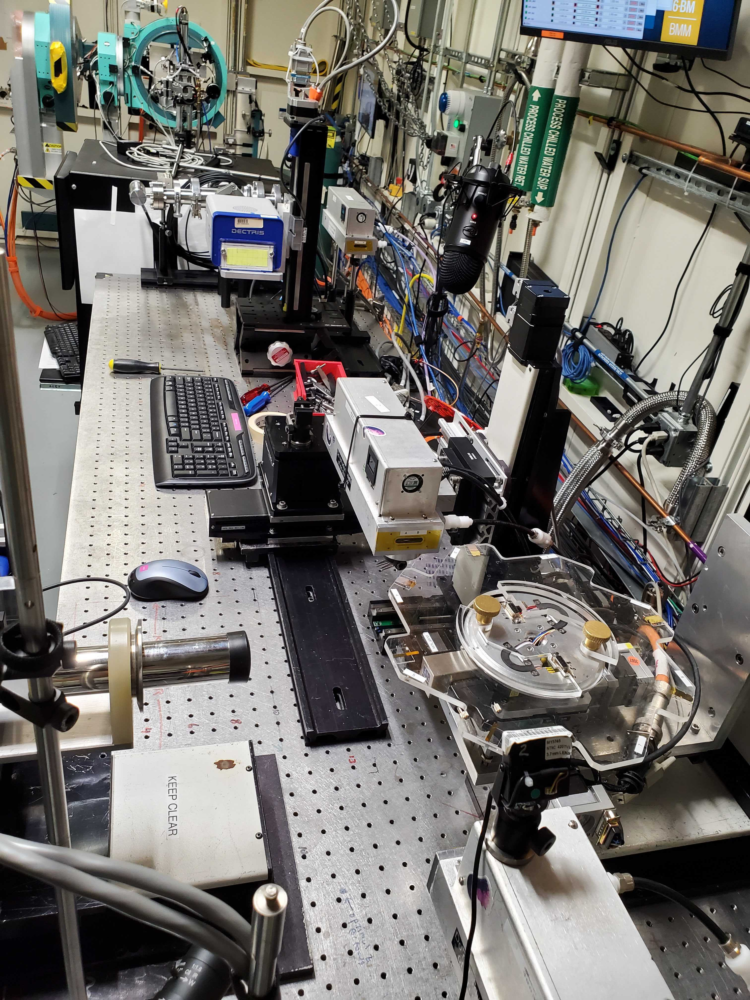
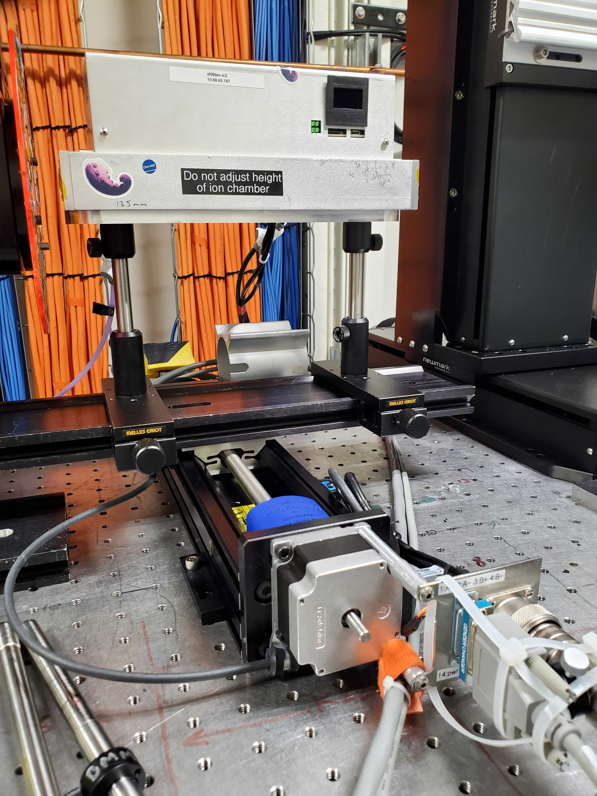
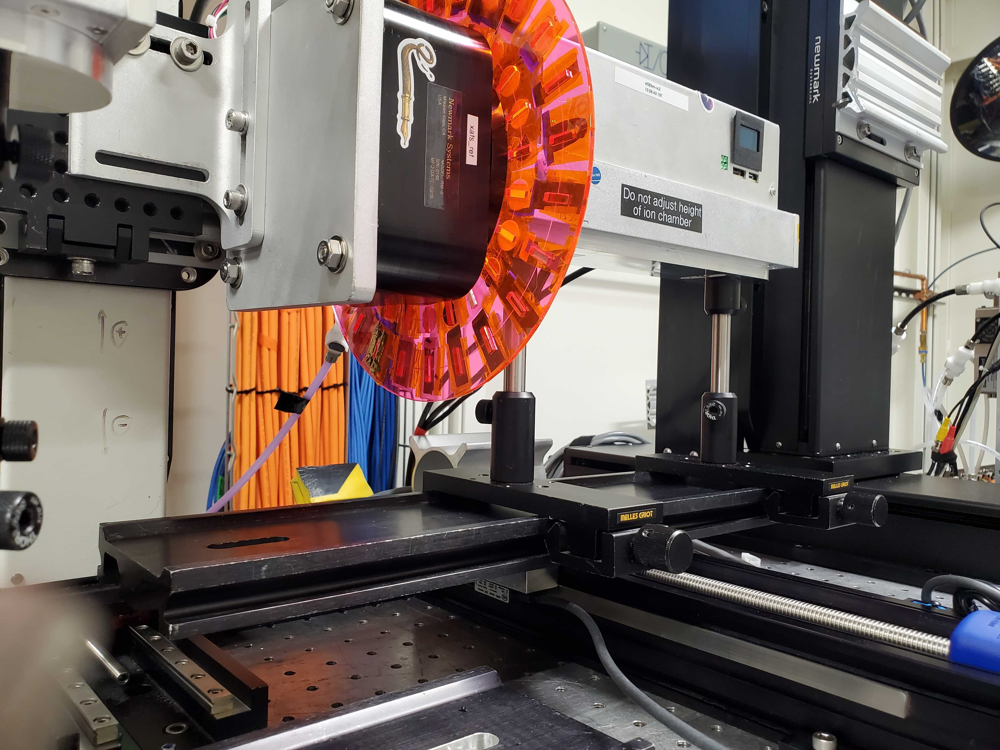

F. Reflectivity Set-Up#
We are still in the early stages of resonant reflectivity experiments at BMM. This section of the beamline manual documents how to set up for one of these experiments.
This section is a work in progress.
From a setup perspective, the reflectivity experiment requires this instrumentation configuration:
The sample is mounted on the Huber tilt stage (Section 5.9), which is mounted on the sample XY stage.
The It chamber is mounted on a translation stage in X so it can be translated in and out of the beam.
A beam stop is positioned downstream of the It chamber.
An area detector – either the Pilatus or the Eiger – is on an XY stage near the downstream end of the table.


Fig. F.1 (Left) The reflectivity setup viewed from the side. (Right) The reflectivity set up from above.#
Attention
Figure F.1 was a setup during
the 2025-3 cycle. That was prior to the new xafs_y and
xafs_y stages and the repurposing of the old stages as
xafs_adx and xafs_ady
F.1. Translatable It Chamber#
The It chamber needs to be on a stage. Sample alignment uses the It signal, but the actual measurement needs to have the scattered signal be unobstructed by the bulk of the chamber.
One solution to this problem is to bolt the xafs_spare stage to
the table as shown in Figure F.2.
A small piece of rail is bolted to the xafs_spare carriage. Note
that this uses a particular piece of railing that has been modified
for this use.
Be very mindful of the bundle of ethernet cable, power cable, and gas line. It is way too easy to get something in that bundle to catch on the edge of the table or some other obstruction. In Figure F.2, a piece of X-rail has been secured to the table to provide support for the cables.
Future Tech!
Set in and out positions as attributes of the refl object.
Current using values set in BMM_configuration.ini.
RE(it_in())
RE(it_out())


Fig. F.2 (Left) The It chamber on the xafs_spare stage.
(Right) It fully retracted. Note that the bundle of
ethernet cable, power cable, and gas line are carefully placed to
not catch on an edge when moving in the +X direction.#
F.2. Mounting the beam stop#
Todo
Take a lot of photos the next time Evan is here.
xafs_bsx and xafs_bsy
Put a phosphor screen somewhere below the detector. Put the beam on that screen.
Raise xafs_bsy until it just obstructs that beam. Lower
xafs_ady into the beam and use the area detector to fine-tune
the position of the beam stop.
Set limits as needed on xafs_bsx and xafs_bsy
F.3. Mounting the Pilatus 100k#
Use xafs_adx and xafs_ady. Use the L-bracket labeld as
being for the Pilatus.
See Section E.20 for instructions on getting the Pilatus 100k up and running.
Future Tech!
Use the Eiger 4M.
F.4. Bluesky configuration#
Do stuff with BMM_configuration.ini…
F.5. Experiments#
Resonant relfectivity spreadsheet (⎘ spreadsheet)
Todo
Need to document how interactions with area detector ROIs works.
Todo
Need to document what information goes into the spreadsheet.